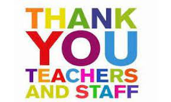

This is my 1st year at EPS and so far it's going well.
| Favorite | Image | Reason |
|---|---|---|
| Teachers & Staff |  | I've always like the teachers and staff here at EPS. The teachers are very helpful and sure your able to understand what's going on in class. At EPS all the teacher are always nice sincere in what they teach. What I like about the staff is that they make sure you feel comfortable and safe at school. |
| Bastball Season |  |
Throughout my 4 seasons of basketball each year this one at EPS was the best. Even though we didn't go that far into the playoffs the relaitonship with the coaches and older players was phenomenal. It felt like I was supported all season and was motivated to play my best. EPS basketball was way for me to get to know students from older grades, teamwork, hardwork, and fun. |
So far these are my favorite things at EPS! Overall the school has been beneficial and supportive to me from classes to after school clubs. I can't wait for the rest of the years to come as I start to finish this spring Tri strong!
Learn about EPS here!!!